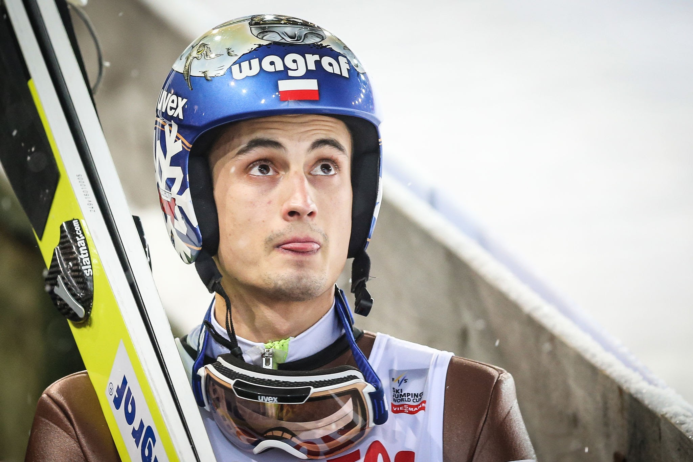

Maciej Kot:

Maciej Kot (ur. 9 czerwca 1991 w Limanowej) – polski skoczek narciarski, zawodnik klubu AZS Zakopane, reprezentant Polski.
Drużynowy brązowy medalista Zimowych Igrzysk Olimpijskich 2018. Drużynowy złoty (2017) i brązowy (2013) medalista mistrzostw świata. Indywidualny wicemistrz świata juniorów z 2009, dwukrotny drużynowy brązowy medalista mistrzostw świata juniorów, dwukrotny indywidualnie oraz drużynowy medalista Zimowej Uniwersjady 2011. Zwycięzca Letniego Grand Prix 2016, trzeci zawodnik klasyfikacji generalnej Letniego Pucharu Kontynentalnego 2015. Wielokrotny medalista mistrzostw Polski, w tym dwukrotny mistrz indywidualny z 2013 i 2016 roku. Jego rekord życiowy wynosi 244,5 m, ustanowiony został na Vikersundbakken w Vikersund 18 marca 2017